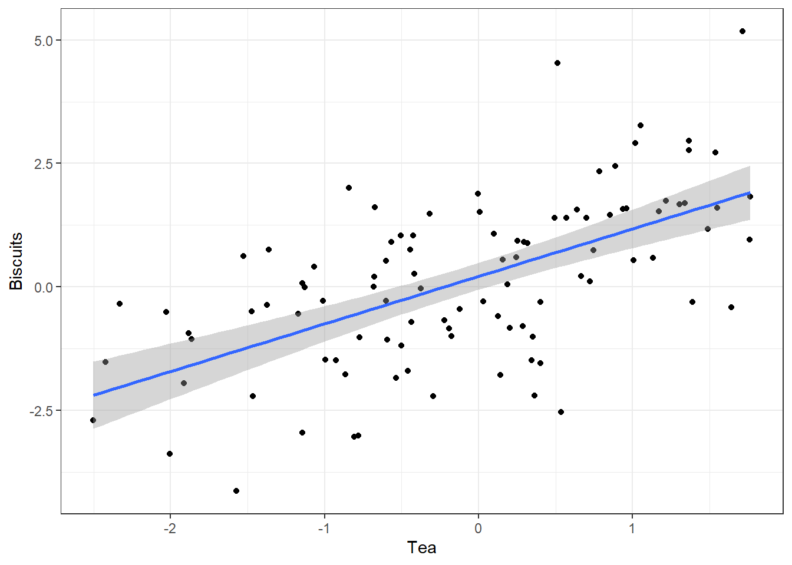

We have already seen how the right set of tools can save you time by automatically highlighting the syntax of your code, ensuring everything you cite ends up in your bibliography, picking out mistakes in syntax, and providing templates for commonly-used methods or functions. Your time is saved twice over: you don’t repeat yourself, and you make fewer errors you’d otherwise have to fix. When it comes to managing ongoing projects, minimizing error means addressing two related problems. The first is to find ways to further reduce the opportunity for errors to creep in without you noticing. This is especially important when it comes to coding and analyzing data. The second is to find a way to figure out, retrospectively, what it was you did to generate a particular result. Using a revision control system gets us a good distance down this road. But there is more we can do at the level of particular reports or papers.
When you write code it is often in the process of doing some analysis
on the fly. Ideas occur to you, you have a few things you want to look
at, one thing leads to another. As a rule, you should try to document
your work as you go. If you are writing an R script, then this usually
means adding (brief, but useful) comments to your work to explain what
it is a piece of code is meant to do. Is should also mean trying to
write your code so that is readable. Code is like prose in this
respect. Hadley Wickham’s
R Style Guide provides some
useful guidelines about writing readable code. The R package
lintr implements these
principles—it acts like a copy-editor for your code. In Emacs you can
use lintr automatically through a tool called flycheck.
You should also try not to repeat yourself when you write your code. A good rule is that if you find yourself copying and pasting chunks of code (for example, to draw the same sort of plot or run the same kind of model for a bunch of different variables) then you should pause and see if you can write a quick convenience function instead to automate things more effectively. That way, your code can be shorter and also less prone to the errors and inconsistencies that creep in through repeated copy-and-paste.
Errors in data analysis often well up out of the gap that typically exists between the procedure used to produce a figure or table in a paper and the subsequent use of that output later. In the ordinary way of doing things, you have the code for your data analysis in one file, the output it produced in another, and the text of your paper in a third file. You do the analysis, collect the output and copy the relevant results into your paper, often manually reformatting them on the way. Each of these transitions introduces the opportunity for error. In particular, it is easy for a table of results to get detached from the sequence of steps that produced it. Almost everyone who has written a quantitative paper has been confronted with the problem of reading an old draft containing results or figures that need to be revisited or reproduced (as a result of peer-review, say) but which lack any information about the circumstances of their creation. Academic papers take a long time to get through the cycle of writing, review, revision, and publication, even when you’re working hard the whole time. It is not uncommon to have to return to something you did two years previously in order to answer some question or other from a reviewer. You do not want to have to do everything over from scratch in order to get the right answer. I am not exaggerating when I say that, whatever the challenges of replicating the results of someone else’s quantitative analysis, after a fairly short period of time authors themselves find it hard to replicate their own work. Computer Science people have a term of art for the inevitable process of decay that overtakes a project simply in virtue of its being left alone on the hard drive for six months or more: bit–rot.
knitrAn important way to caulk this gap is to use RMarkdown and knitr when doing quantitative analysis in R. We’ve already seen how to write plain-text documents in Markdown’s lightweight format. RMarkdown allows you to incorporate code into this process. It is designed to integrate the plain-text documentation or writeup of a data analysis and its execution. You write the text of your paper (or, more often, your report documenting a data analysis) as normal. Whenever you want to run a model, produce a table or display a figure, rather than paste in the results of your work from elsewhere, you write down the R code that will produce the output you want. These “chunks” of code can be interspersed throughout the document. They are distinguished from the regular text by a special delimiter at the beginning and end of the block.
When you’re ready, you knit the document [xie15dynamdocumr]. That
is, you feed your .Rmd file to R, which processes the code chunks,
and produces a new .md where the code chunks have been replaced by
their output. You can then turn that Markdown file into a PDF or HTML
document. Relatedly, the
rmarkdown library
in R provides a render() function that takes you from .Rmd to HTML
or PDF in a single step. This is what RStudio uses to produce your
documents. Conversely, if you just want to extract the code you’ve
written from the surrounding text, then you “tangle” the file, which
results in an .R file. It’s pretty straightforward in practice. The
strength of this approach is that is makes it much easier to document
your work properly. There is just one file for both the data analysis
and the writeup. The output of the analysis is created on the fly, and
the code to do it is embedded in the paper. If you need to do multiple
but identical (or very similar) analyses of different bits of data,
RMarkdown and knitr can make generating consistent and reliable
reports much easier.
RMarkdown is one of several “literate programming” formats. The idea goes back to Donald Knuth, the pioneering theorist of computer science who developed the TeX typesetting system in his spare time. Although his focus was on documenting computer programs, in retrospect Knuth anticipated many of the main ideas—and developed several of the initial tools—for reproducible data analysis.
Figure 3.1, for instance, could be generated on the fly
from source-code blocks included in the .Rmd source for this
article. Sometimes we will want to only show the results produced by
the code—in this case, Figure 3.1. But at other times we
will want to display the code as well, as here.
library(ggplot2)
tea <- rnorm(100)
biscuits <- tea + rnorm(100, 0, 1.3)
data <- data.frame(tea, biscuits)
p <- ggplot(data, aes(x = tea, y = biscuits)) +
geom_point() +
geom_smooth(method = "lm") +
labs(x = "Tea", y = "Biscuits") + theme_bw()
print(p)## `geom_smooth()` using formula 'y ~ x'Mynd 3.1: R code for a figure.
The knitr library and RMarkdown make it easy to produce HTML output, too. This
makes for easy portability, conversion, and quick previewing while
editing. You can work with RMarkdown files in any text editor, and
Emacs has strong support for them. RStudio also comes with built-in
support for .Rmd files and makes it very easy to produce HTML and
PDF output, and to publish your reports to the web via its
RPubs service.1 RStudio’s Rmarkdown support uses all the same tools described here—i.e. knitr, pandoc, and so on. Writing RMarkdown documents via RStudio is the easiest way to get used to producing finished papers and reports using plain-text sources and R.
The knitr website has numerous examples showing how it works. These range from the basic setup to more developed examples.
The literate programming approach has its limits. For large or complex
analyses it can still make more sense to produce the final result in
pieces rather than all at once in a single .Rmd file. This is one of
the reasons it remains important to manage your projects using some
kind of version control, so you can keep track of work that is needed
but might not fit inside a single .Rmd document.
make